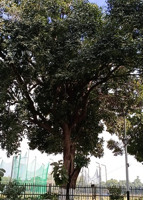

Jamun Tree
Scientific name = Syzygium cumini
It is native to the Indian Subcontinent, adjoining regions of Southeast Asia, China and Queensland.
A slow growing species, it can reach heights of up to 30 m and can live more than 100 years. Its dense foliage provides shade
and is grown just for its ornamental value. At the base of the tree, the bark is rough and dark grey, becoming lighter grey and smoother higher up.
The wood is water resistant. Because of this it is used in railway sleepers and to install motors in wells. It is sometimes used to make cheap furniture
and village dwellings though it is relatively hard to work on.
The leaves which have an aroma similar to turpentine, are pinkish when young, changing to a leathery, glossy dark green with a yellow midrib as they mature. The leaves are used as food for livestock, as they have good nutritional value.
The seed of the fruit is used in various alternative healing systems like Ayurveda, Unani and Chinese medicine.
The extract of the fruit and seeds are found be effective against hyperglycemia in diabetic rats.
Wine and vinegar are also made from the fruit. It has a high source in vitamin A and vitamin C.